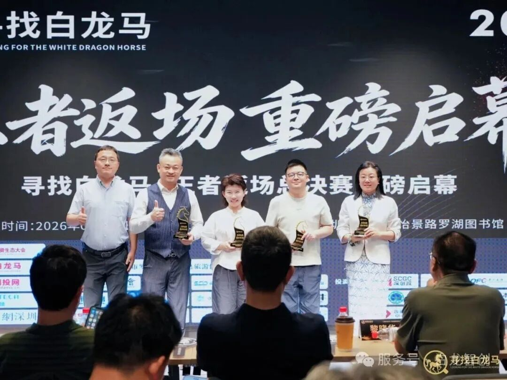
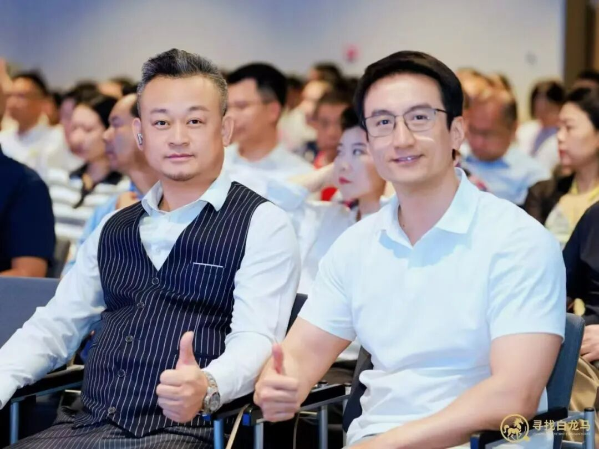
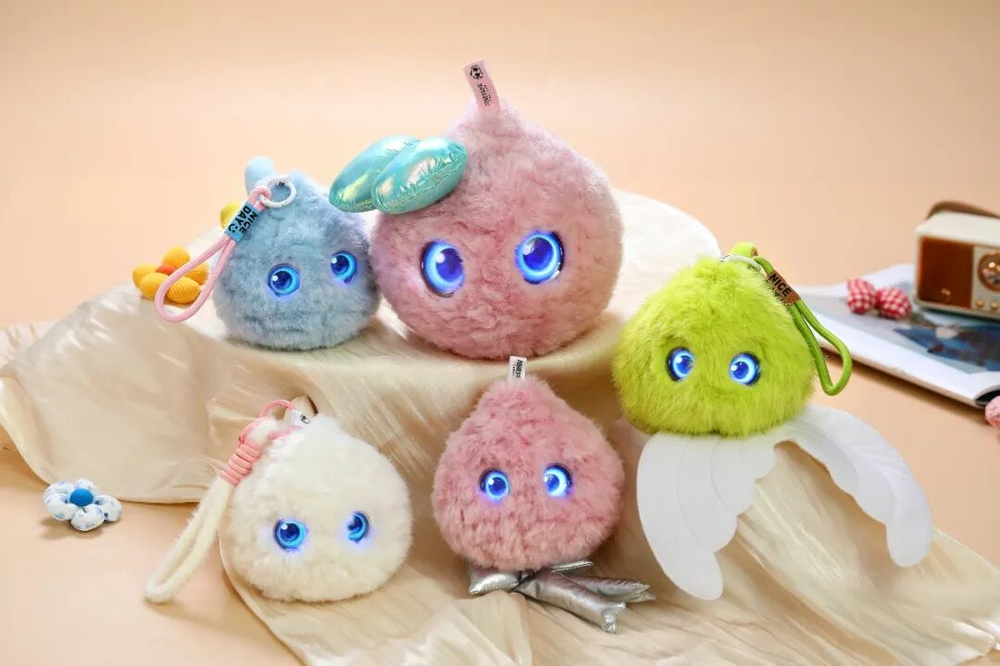
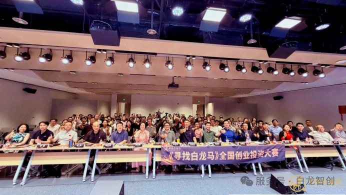

2026年8月10日，《寻找白龙马》“王者返场”硬科技投融资交流会于深圳罗湖区图书馆圆满收官！国内情绪健康AI标杆企业超级有爱现场突围，一举拿下峰会核心重磅荣誉——「最具潜力奖」，收获政府、头部资本、行业专家的全方位权威认可！

本次峰会集结200余位产业代表、上市公司高管、一线创投大咖，聚焦第三代半导体、AI、生物医药等前沿硬科技赛道，仅从往期数十期路演项目里精选12家优质科创企业返场角逐。现场配备百人专业评审团，15位行业权威专家搭配50位大众评审，深创投、同创伟业、启赋资本等数十家头部机构合伙人现场打分，围绕技术壁垒、市场前景、商业化落地、成长空间多维度严苛筛选，奖项含金量十足。

在半导体、自动驾驶等高热度赛道同台竞技中，超级有爱凭借情绪健康AI差异化优势突出重围，这份「最具潜力奖」，既是资本市场对儿童情绪AI赛道巨大价值的高度看好，更是行业对自研产品超级球球AI儿童成长陪伴机器人硬核实力的盖章认证！
创新赛事机制，构建高效产融对接体系
不同于传统硬科技赛道，超级有爱深耕AI + 儿童心理健康刚需赛道，直击当下千万家庭育儿痛点：专业心理咨询资源稀缺、线下咨询价格高昂、孩子易怒胆怯、亲子沟通困难、抗压能力弱等难题。
公司核心王牌产品超级球球AI儿童成长陪伴机器人，是行业唯一完整复刻专业心理咨询师工作体系的AI成长伙伴：
超级球球是行业复刻专业心理咨询师工作体系的AI成长伙伴，依托20年儿童心理临床经验与十万级脱敏数据训练，具备情绪识别、共情对话、负面疏导、性格养成、长期记忆等全维度核心能力，精准解决儿童拖延散漫、情绪易怒、抗压薄弱、社交胆怯、亲子沟通不足等普遍育儿痛点。

产品分为全能版、精灵版两大形态，适配居家哄睡、日常陪伴、上学通勤、外出出行等全场景。依托四大正向性格人设，在轻量化互动中潜移默化培养孩子自律专注、情绪管理、乐观抗挫、高情商沟通的综合素养。产品采用无屏幕纯语音交互，兼顾视力保护与防沉迷需求，配套家长成长日报功能，在保护隐私的前提下助力家长科学育儿。
全球展会背书，渠道销量双领跑，赛道标杆实至名归
作为情绪AI细分赛道标杆产品，超级球球早已斩获海内外多项重磅认可：先后登陆美国CES、上海WAIC、中国进博会等国际顶级科技展会，入驻京东等三十余家主流电商线下渠道，多次登顶儿童AI陪伴品类销量榜首，拿下多项全国人工智能赛事大奖，产品市场口碑与商业化落地能力经过市场充分验证。
创新产融峰会加持，硬核技术收获资本高度青睐
本次《寻找白龙马》峰会创新采用「星推官 + 标准化AI路演VCR」双轨模式，用数字人融资名片高效对接投资机构，搭建“融资 + 产业落地 + 出海”一站式资源平台。
超级有爱依托完整技术闭环、清晰商业化路径、广阔民生消费市场空间，在多轮投票、现场投资意向综合评比中脱颖而出摘得「最具潜力奖」。主办方现场促成大量投融资对接意向，获奖后已有多家投资机构主动跟进洽谈深度合作。
坚守科创初心，用AI守护千万儿童心理健康
当下新质生产力持续赋能民生领域，儿童情绪健康是亟待补齐的民生短板。超级有爱始终以“科技赋能心理健康”为使命，不靠概念炒作，坚持全链路自研，用普惠智能产品降低儿童心理服务门槛。

此次斩获重磅奖项是全新起点。未来超级有爱将持续迭代超级球球系列产品，深挖AI与儿童心理融合创新场景，持续联动资本与产业资源，推动国内情绪健康AI产业高质量发展，用科创力量守护每一位孩子健康成长。
部分图文内容来自微信公众号白龙智创